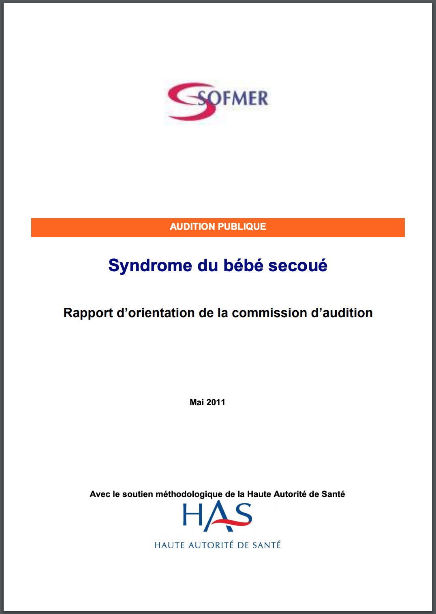

En mai 2019, un père de famille a été acquitté par la Cour d'assises d'appel de Rouen, après huit ans de combat judiciaire. Cette décision de justice s'oppose aux expertises judiciaires concluant, sur la base des Recommandations de la Haute Autorité de Santé sur le « syndrome du bébé secoué » (SBS), au caractère soi-disant « certain » du secouement. Une telle décision de justice est une première en France.
Ce père était accusé à tort d'avoir secoué son fils Joan âgé de 4 mois, décédé en 2011. En première instance en mars 2018, il avait été condamné à huit ans de prison ferme par la Cour d'assises de l'Eure.
Les Recommandations de la Haute Autorité de Santé contestées
En appel, grâce aux témoignages de deux professeurs de médecine, le Pr. Marescaux, neurologue, et le Pr. Echenne, neuropédiatre, et avec l'aide d'un avocat ayant l'expérience de ce sujet, Me Grégoire Etrillard, la défense a pointé avec succès les faiblesses des Recommandations de la Haute Autorité de Santé (HAS) relatifs aux « bébés secoués » sur lesquels se fondent la quasi-totalité des rapports d'expertise judiciaire en la matière en France.

En particulier, l'avocat de la défense notait que les poursuites étaient essentiellement fondées sur un rapport d'examen médical et de synthèse qui se fondait expressément sur ces Recommandations de la Haute Autorité de Santé. Or ce rapport judiciaire était rédigé par le Docteur Anne Laurent-Vannier, présidente du groupe de travail de la HAS, et le Professeur Catherine Adamsbaum, un des quatre chargés de projet du même groupe de travail. L'avocat indiquait que les experts pouvaient donc être considérés comme juge et partie, présentant leur propre rédaction comme une autorité suffisante pour rédiger leur rapport judiciaire, sans aucune possibilité de regard extérieur. Les Professeurs Marescaux et Echenne, appelés à témoigner, présentaient les insuffisances et approximations qui pouvaient être reprochées aux Recommandations de la Haute Autorité de Santé.La Cour d'assises d'Appel a suivi le raisonnement proposé par la défense et a conclu, malgré ces expertises judiciaires concluant de manière « certaine » à un secouement, « qu'il existe un doute sérieux sur le fait que les anomalies et lésions ayant causé la mort de l'enfant soient la conséquence d'actes de secouement commis par [le père de l'enfant]. »
Le père de Joan a ainsi été acquitté après un calvaire ayant duré plus de huit ans. Il faut espérer que ce résultat réveillera la communauté juridique et scientifique, afin de contraindre la Haute Autorité de Santé à revoir le texte de ses recommandations. D'autres juridictions ont en effet abandonné au moins en partie le diagnostic de « bébé secoué » tel qu'il est posé en France.
Une chute accidentelle fatale
Tout avait commencé en février 2011 lorsque le petit Joan, 4 mois, faisait une chute du lit parental alors qu'il se trouvait avec son père, Dominique, et sa grande sœur âgée de trois ans. Quelques jours auparavant, il était apparu au cours de la visite médicale mensuelle que le périmètre crânien avait augmenté de six centimètres en un mois. Le médecin traitant, n'ayant pas de connaissances particulières en neurologie, ne s'en était pas inquiété, disant simplement que cette « grosse tête » prouvait que l'enfant serait « intelligent ».
Malheureusement, cette chute d'apparence mineure a, chez Joan, été fatale. À l'autopsie, le médecin légiste a conclu que l'excès pathologique de liquide autour du cerveau de Joan, combiné à une chute de faible hauteur, avaient pu causer le décès. Il s'agissait donc initialement d'un accident fatal.
De l'accident à l'infanticide
Pourtant, trois ans plus tard, les parents de Joan ont été convoqués à la gendarmerie. Le père a été placé en garde à vue pendant deux jours. Cette convocation faisait suite à un rapport d'expertise affirmant que la cause du décès de Joan était intentionnelle et non accidentelle, causée par des secouements violents ayant notamment eu lieu peu avant le décès.
Cette conclusion se basait en grande partie sur la présence d'hématomes sous-duraux chez Joan. Le rapport judiciaire avait été rédigé par le Docteur Anne Laurent-Vannier, présidente du groupe de travail de la Haute Autorité de Santé, et le Professeur Catherine Adamsbaum, un des quatre chargés de projet de ce groupe de travail. Selon les Recommandations de la HAS, les chutes de faible hauteur ne produisent jamais les éléments conduisant au diagnostic de « bébé secoué ».
Ce revirement de situation a causé un choc chez toute la famille. Dominique n'a jamais cessé de clamer son innocence, et sa femme Émilie n'a jamais cessé de le défendre. Suite à sa garde à vue, Dominique a échappé à la détention provisoire, mais il a été placé sous contrôle judiciaire avec obligation de pointer tous les mois à la gendarmerie.
Suite à cela, la famille a dû endurer les convocations devant la juge d'instruction, les expertises psychiatriques, psychologiques, les rendez-vous chez l'avocat, tandis que la vie de famille devait continuer. Les parents de Joan étaient persuadés que la justice se rendrait compte de cette erreur, étant donné que le rapport d'expertise, seul élément à charge, était incohérent avec tout le reste du dossier. Ils pensaient qu'il suffirait d’expliquer que les experts judiciaires ne savent pas tout.
Le procès et la prison
Le jour du procès aux assises d'Evreux, en mars 2018, l'avocat initial de Dominique, non spécialisé dans la matière, était confiant. Pourtant, le déroulé du procès fut terrible. On a reproché à la famille d'être « trop parfaite ». Les experts ayant témoigné, seuls médecins présents à l'audience, n'ont pas été remis en question sur leurs opinions. Vers la fin du procès, l'avocat a finalement conseillé à Dominique « d'avouer » ce qu'il n'avait pas fait pour éviter la condamnation. Mais ce dernier a refusé, étant innocent.
Le procureur a requis cinq ans de prison dont deux fermes. Finalement, le jury a condamné Dominique à une peine de huit ans de prison ferme.
Ce verdict a été dévastateur pour la famille. Émilie devait informer ses enfants, gardés chez leur grand-mère pendant le procès, que leur papa ne rentrerait pas à la maison. Sur conseil de l'avocat, persuadé de l'acquittement, les enfants n'avaient même pas été informés de la survenue du procès.
Dominique a été immédiatement incarcéré alors qu'il pensait rentrer chez lui. Sur conseil de son avocat, il n'avait rien préparé, aucune affaire, aucun vêtement de rechange.
Il avait dix jours pour faire appel, mais il n'eut droit à aucune visite pendant quinze jours. Malgré le silence de son avocat, qui ne lui rendit pas visite pendant son incarcération, il fit appel de sa condamnation tandis que sa femme lui promettait par courrier qu'elle lui trouverait un autre avocat.
Durant le temps de la détention, qui durera près de quatre mois, Émilie pouvait voir son mari deux fois par semaine, dont une fois avec les enfants. Elle fut en arrêt de travail pendant deux mois. Les visites au parloir étaient terribles pour la famille. Les enfants étaient très choqués de voir leur père en prison alors qu'il n'avait rien fait. Au cours d'une visite, l'un des enfants fit même une crise d'angoisse qui a nécessité une consultation en urgence à l'hôpital pour suspicion de malaise cardiaque. À la maison, Émilie devait tant bien que mal expliquer à ses enfants pourquoi ils n'avaient plus leur père avec eux.
Lueur d'espoir
En faisant des recherches sur Internet, la mère découvrit le site de l'association Adikia et ses témoignages de familles vivant le même cauchemar. Après avoir pris contact, elle rencontra Me Grégoire Etrillard qui accepta de reprendre le dossier pour faire sortir son mari de prison et faire reconnaître son innocence.
Au bout de près de quatre mois de détention, Me Etrillard parvint à faire sortir Dominique de prison. Il put retourner auprès des siens en attente du procès en appel.
Entre temps, il fut licencié à cause de la procédure en cours, avant de retrouver du travail ailleurs. Dans le même temps, Me Etrillard put, avec beaucoup de difficultés, récupérer le dossier médical de Joan. Les preuves de l'innocence de Dominique se trouvaient à l'intérieur, mais encore fallait-il que des médecins s'y penchent.
Le dossier médical fut transmis au Pr Marescaux, neurologue, et au Pr Echenne, neuropédiatre. En examinant le dossier, ils déterminèrent tous les deux que Joan était bien décédé suite à sa chute, à cause de fragilités constitutionnelles.
Le procès en appel
En mai 2019, le procès en appel eut lieu à la Cour d'Appel de Rouen. Étaient présents les experts ayant conclu à tort au syndrome du bébé secoué, ainsi que les Pr. Marescaux et Pr. Echenne.
Au cours du procès, les débats se sont focalisés sur les discussions médicales. Des anomalies furent soulignées dans l'expertise judiciaire, tandis que les deux Professeurs mirent en exergue les preuves que le récit du père était totalement compatible avec les lésions et le décès de l'enfant, et qu'il n'y avait aucun élément scientifique permettant de diagnostiquer un secouement violent.
La Cour a suivi les arguments de la défense et a ainsi acquitté Dominique, à son grand soulagement et celui de tous ses proches, qui l'ont toujours défendu.
Dans sa décision, le tribunal a noté que le père avait toujours clamé son innocence, que le récit des faits avait été parfaitement constant au cours de tous les interrogatoires, et que jamais personne ne l'avait mis en cause pour des comportements violents, maltraitants, ou inadéquats envers son fils.
De plus, la cour notait qu'un céphalhématome constaté chez l'enfant, mais non retenu par les experts judiciaires, était susceptible d'expliquer partiellement certaines des lésions cérébrales constatées sur l'enfant après son décès ; que la datation des épisodes de secouements qui auraient eu lieu, selon l'expertise judiciaire, juste avant le décès mais également deux mois auparavant, était incompatible avec le fait que l'enfant ne présentait aucun symptôme visible pendant ces deux mois alors même qu'il faisait l'objet d'un suivi médical régulier ; qu'il n'existait pas d'hémorragies rétiniennes typiques du syndrome du bébé secoué ; que l'expert anatomo-pathologiste ne concluait pas avec certitude à l'existence de secouements de l'enfant ; et enfin, qu'il existait « un doute incontestable » sur le nombre, l'importance, et l'origine des hématomes sous-duraux présents chez l'enfant, ainsi que sur la datation et l'ancienneté des différentes lésions relevées post-mortem sur l'enfant.
Pour toutes ces raisons, la cour a considéré « qu'il existe un doute sérieux sur le fait que les anomalies et lésions ayant causé la mort de l'enfant soient la conséquence d'actes de secouement commis par [Dominique]. » Par conséquent, elle a considéré qu'il n'était « pas coupable de l'infraction faisant l'objet de l'accusation portée contre lui » et elle a donc prononcé son acquittement.
Remerciements
Il est à espérer que cet acquittement en précède bien d'autres, que d'autres familles injustement accusées sur la base d'éléments médicaux non recevables soient également innocentées, et que les autorités évoluent enfin sur ces erreurs diagnostiques qui ont des conséquences humaines terribles.
Émilie et Dominique tiennent finalement à publier ces remerciements :
Nous ne remercierons jamais assez notre avocat Maître Grégoire Etrillard pour son travail, sa détermination, son grand cœur, ses incroyables connaissances. Nous n'oublierons jamais non plus, Maître Julie Grare, sa collaboratrice, qui a également beaucoup travaillé. Merci aussi aux Professeurs Marescaux et Echenne qui ont fourni un travail considérable et donné beaucoup de leur temps. Merci à l'association Adikia pour toute l'aide et le réconfort qu'ils nous ont apporté et apportent toujours à toutes ces familles victimes d'injustices. Enfin merci aux membres de notre famille, collègues et amis qui n'ont jamais douté de notre innocence.